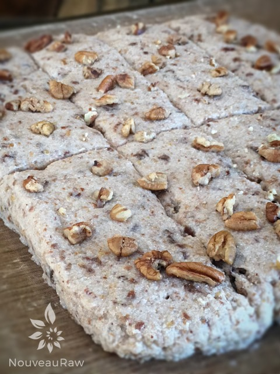

Banana Bread Toast Sticks

~ raw, vegan, gluten-free ~
I’m a bit of a banana bread freak—putting it mildly. I don’t know many people who don’t love banana bread. And for those of you who don’t… well, I’m genuinely sorry for your taste buds. You’re missing out on something special and downright comforting.
The Budding Entrepreneur in Me
When I was 21, I began a 14-year career in the pharmaceutical and medical equipment world. My first position was in the compounding department, where I learned how to make everything from pills to creams to ointments. That part of the business was tucked away in a charming little building that shared space with other health practitioners.
One day, the pharmacist and I decided to create a snack nook to serve our neighboring businesses. At first, we stocked it with the usual suspects—candy bars, chips, soda. You know, convenience store staples. But it felt… uninspired. So I offered to bring in homemade rice crispy treats and mini loaves of banana bread instead.
Turns out, those little loaves were a hit. We could barely keep them on the shelves. I can still smell the dreamy aroma of banana bread baking in that tiny kitchen. Sighs deeply in nostalgia.
So when I created this raw version of banana bread, I was instantly transported back to that apartment kitchen—table covered in cooling mini loaves, banana-scented steam filling the air. And let me tell you: when this batch came out of the dehydrator, my tummy growled like it remembered too.
If you can, I highly recommend enjoying these straight from the dehydrator while they’re still warm. Is there anything better than warm banana bread? These Banana Bread Toast Sticks are sturdy enough to eat with your hands (no floppy bread here), dry to the touch on the outside, and wonderfully moist on the inside.
They’re divine with a smear of vegan butter, dipped in maple syrup, or honestly—just as they are. I really hope you give this recipe a try, and if you do, drop me a note in the comments to let me know what you think.
Warm banana-scented blessings,
amie sue
yields 16 sticks
Preparation:
- In a food processor fitted with the “S” blade, combine the almond pulp, bananas, water, maple syrup, cinnamon, salt, ground flax, and raisins. Mix well, making sure everything is well blended.
- Spread the batter 1/2″ thick on non-stick sheets that come with the dehydrator.
- If you don’t own non-stick sheets, you can use parchment paper but not wax (it will stick).
- Square off the edges and then score into sticks.
- Optional: sprinkle crushed pecans on top.
- Dehydrate at 145 degrees for 1 hour, then reduce to 115 degrees (F) for 4-6 hours.
- Flip the sheet over onto the mesh sheet and peel the teflex sheet off.
- Continue drying for another 4 hours until it reaches the level of dryness that is desired. These are not meant to be cracker crispy.
- Store in an airtight container for 5-7 days in the fridge or freeze up to 1 month to extend shelf life.
- To learn more about maple syrup by clicking (here).
- Why do I specify Ceylon cinnamon? Click (here) to learn why.
- What is Himalayan pink salt, and does it matter? Click (here) to read more about it.
Culinary Explanations:
- Why do I start the dehydrator at 145 degrees (F)? Click (here) to learn the reason behind this.
- When working with fresh ingredients, it is important to taste test as you build a recipe. Learn why (here).
- Don’t own a dehydrator? Learn how to use your oven (here). I do, however honestly believe that it is a worthwhile investment. Click (here) to learn what I use.
I wanted to provide a picture of what it looked like as it was ready
to head into the dehydrator. Isn’t it amazing as to how much it
darkened once dried?! No photo trickery here.

© AmieSue.com